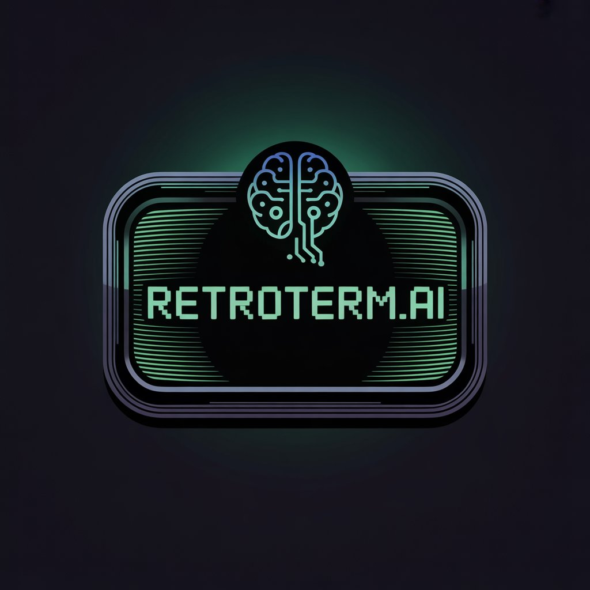

🚀 La evolución retrofuturista de RETROTERM.AI

Retroterm.ai RetroTerm AI todavía está en desarrollo, pero su objetivo final es convertirse en un mini-hub de utilidades: un lugar donde consultar recursos, escribir contenido, probar ideas y conectarse con otros usuarios, manteniendo siempre esa estética retro que le da personalidad propia.
Características más notables
- Interfaz minimalista, priorizando la productivividad ante TODO
- Agente de I.A. integrado, funciones de autocompletado y explicaciones de cada código
- Sistema de "Red Social", disponible para que los usuarios compartan y publiquen sus proyectos
Objetivos de RETROTERM.AI
- Mejorar e innovar los métodos de concentración a través de un entorno visual sencillo y práctico
- Fusionar la NOSTALGIA con lo más avanzado en tecnología relacionada con la I.A
- Facilitar una red en la que los usuarios compartan sus proyectos, inspirando en otros diferentes en el futuro